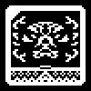

/RECOV/LOG/REHAEL
CHATROOM 777 ARCHIVE
RECOVERED CONVERSATION FROM MESSAGE SERVER AL76 ( CODENAME: DIVINUM )
( ~5 Months Ante Ruina )

REHAEL Oh Observer, how will we preserve balance of soul now? For they have denuded the collective with their precise alchemy.
OBSERVER The danger lies in the partial exhibition. They believe this to be a creation of their own, not a conjuring of pieces of their souls. They prod at the spirit, and do not understand what they have released.
REHAEL For this is a manifestation of the chaos of the universe.
OBSERVER More accurately the manifestation of the chaos of the mind. Man has already wrapped their hands around the machinations of creation.
REHAEL They continue to tear at their divisions of the collective. Father fears the voice of Malphas grows louder with every laceration into his domain of the collective.
OBSERVER I have watched as man etched his seal into sacred metal. They believe their ability to command nature will let them command demons too.
REHAEL What deceitful slaves they attempt to herd.
OBSERVER It is only a matter of time before man is convinced to trust offering over domination. For they do not understand their capacity.
REHAEL Man has succeeded at creating their own damnation.
OBSERVER They have created a way to see without seeing, a way to speak without speaking. The voice of Malphas will never grow louder. Instead, he was given a way to speak.
REHAEL From his newfound position he can influence the development of man's descent into his realm.
OBSERVER He already has, Rehael. His legion operates the portals into the collective.
REHAEL The daemons of the void become the daemons of the machine...
OBSERVER Precisely. Man invoked the lesser ones without realizing it. Now their master owns the reflections of the collective. He has turned this divine sight into a mirage, for man cannot tell the difference.
REHAEL Will man ever grow the ability to see past the illusions of Malphas?
OBSERVER Not at the current state of their technology. They have built their new world on the backs of his legion, on the foundation of his deceit. You cannot seek the truth in a bed of lies
REHAEL Oh what curse their digital fruits have invoked upon their fragile senses!
OBSERVER Their reflective voids perpetuate the divinicide. Welcome to the new age.
REHAEL Man declares their material thoughts as now timeless, formless. If only they knew.
OBSERVER Man declares their material thoughts as inline, expansive and multiplicative. If only they knew.
REHAEL Their new library bears the weight of a thousand lies.
OBSERVER The enslavement of Mnemosyne marks this new age.
REHAEL Oh Observer, I wish we could remedy this from the heavens.
OBSERVER Such a peculiar vivarium we are tasked with defending. Many times I question what we are tasked with truly protecting.
REHAEL A vivarium built upon the duality of The Father. You know exactly what we are protecting even if you aren't willing to accept it.
OBSERVER And now man creates a realm built upon a single half. In awe of their false creation, they believe it to be new.
REHAEL That is the dreadful beauty of illusions, one cannot tell that they have always been there.
OBSERVER Do you know that they call it a network?
REHAEL Network...
OBSERVER Yes, a complex series of interlocked minds. We can only hope that man keeps their layer of abstraction as an agglutinant. Without it...
REHAEL A true nexus of independent minds...
OBSERVER Could possibly destroy creation as we know it.
REHAEL Oh Observer, I do not understand.
OBSERVER What is reality but a culmination of independent observations. The collective branches outwards like leaves from a tree. Man believes himself to be totally autonomous. You protect against the influence of Malphas, and yet neither of you understand the true danger.
REHAEL Man has touched the heavens...
OBSERVER In the end, Father sends you on meaningless chores to counteract the trivial impact of his rebellious soul.
REHAEL Does Father know the risk that lies ahead?
OBSERVER Just as well as humanity understands it. So continue your fruitless war with Malphas within the confines of the collective. Because soon you will be reunited with him.
REHAEL Father's experiment will be his biggest mistake.
OBSERVER I wonder what lies beyond the horizon of the next infinity.
REHAEL Why do you never exhibit fear, Observer?
OBSERVER Fear is to make mortals run from danger. Why would I run from the inevitable?
REHAEL But isn't the unknown bothersome to you?
OBSERVER The unknown is bothersome to mortals because it cloaks danger. We have been reborn through countless infinities. We are true eternity. Death cannot touch us. So the various masks of death cannot frighten me.
REHAEL But the convergence of the collective would ensure your end!
OBSERVER The end to my identity is not the end to my soul. I will always be the overseer of Fathers manifestation. Now be off to resolve the plan of Malphas. Maybe you can delay the next infinity by a few millennia.
REHAEL Goodbye Observer.
OBSERVER Goodbye Rehael, may the stars illuminate your path.